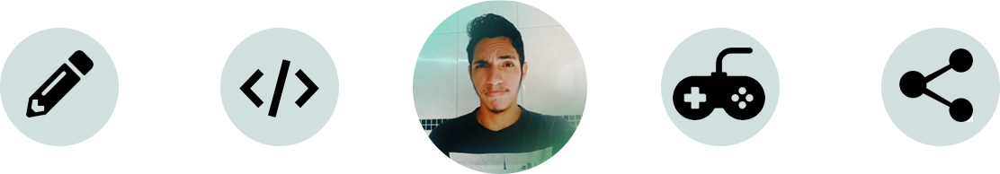

Cursando último período de Ciência da Computação, nascido e criado em São Luís do Maranhão, 22 anos, desenvolvedor front-end, designer e amantes de jogos eletrônicos.
Continue Lendo

Dev // Design // Share
Cursando último período de Ciência da Computação, nascido e criado em São Luís do Maranhão, 22 anos, desenvolvedor front-end, designer e amantes de jogos eletrônicos.
Continue Lendo